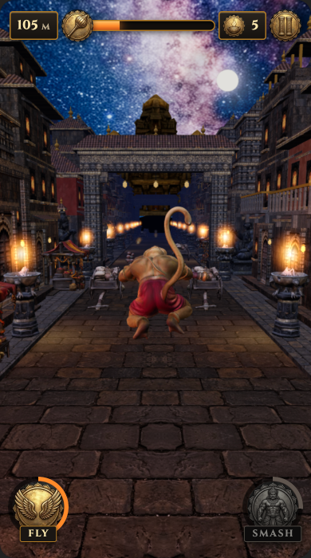
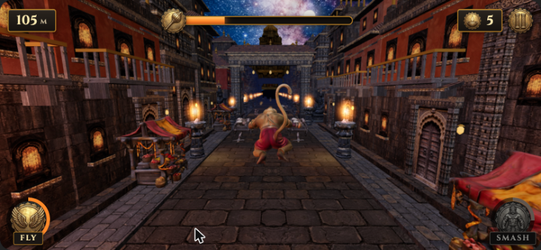
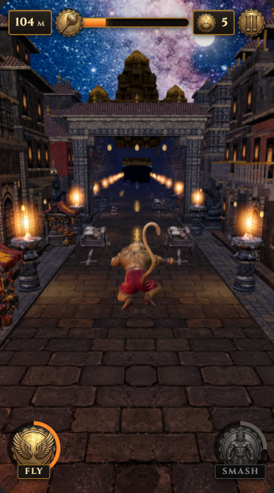
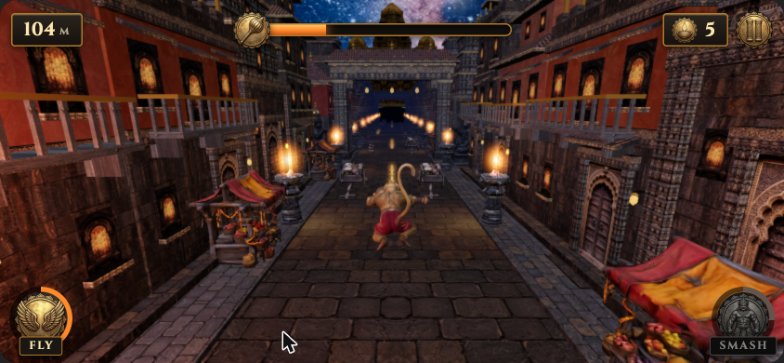
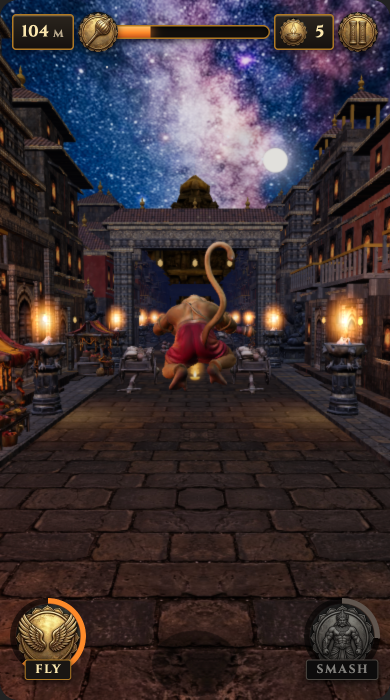
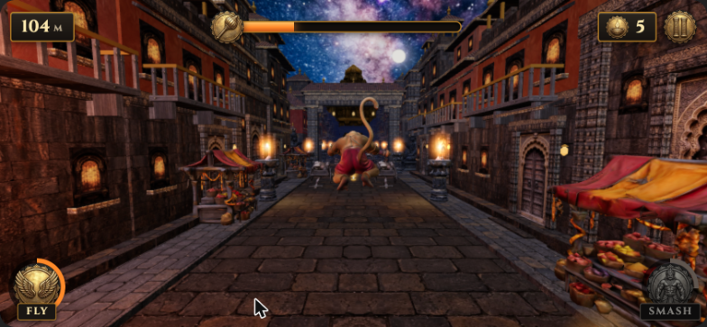
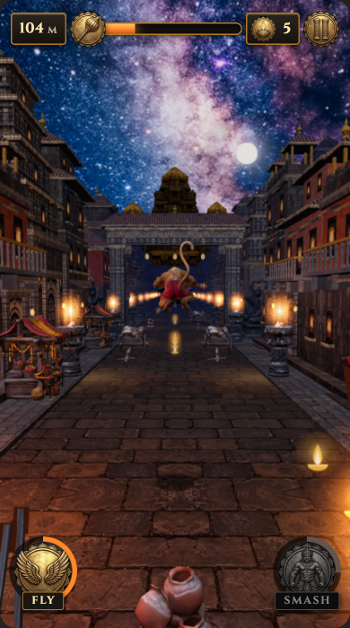
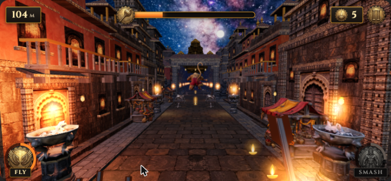

The same moment of the same run, four ways, upright and sideways. Each is taken from the running game. Tell me a letter, or a mix ("B but lower").
Camera 3 m behind and 1.6 m above him. He flies 2.5 m up (was 3.1 m). He sits in the middle; the road shows above him.


Camera 4.2 m behind and 2.6 m above him, tipped down. He flies 2.5 m up. He sits low in the picture; the most road ahead of the four.


Camera 3.2 m behind and 1 m above him, wider lens. He flies 2.1 m up, just over the carts. Fastest feel; he hides more of the road.


For comparison: camera 6.7 m behind at his own height, he flies 3.1 m up.

